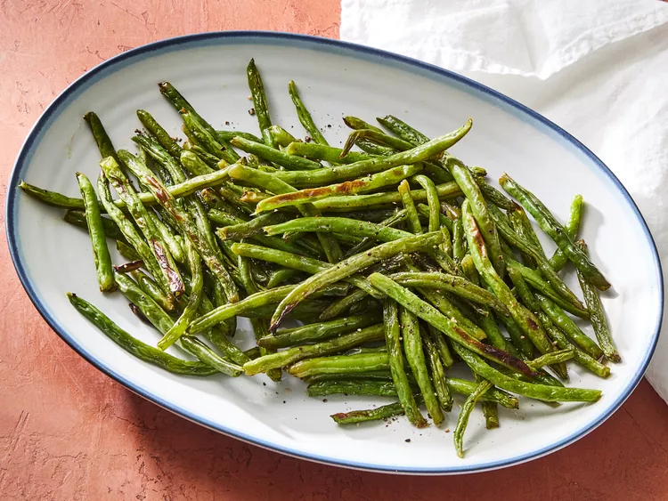

Make Some Incredible Roasted Green Beans

About the Green Beans:
These lean green veggies will pair well with any dish. This recipe serves up to 4 people. Adjust the amount based on the number of people you wish to serve.
What You Will Need:
- 2 pounds of fresh green beans, preferrably trimmed
- 1 tablespoon of olive oil
- 1 teaspoon of kosher salt
- 1/2 of a teaspoon of freshly ground black pepper
How to Cook:
- Gather your ingredients and preheat your oven to 400 degrees fahrenheit or 200 degrees celsius.
- Rinse your green beans and pat them dry with paper towel. Then, spread them out onto a rimmed baking sheet. Drizzle the beans with olive oil, then season with salt and pepper.
Toss the beans until they're all evenly coated and spread them out as a single layer on the baking sheet.
- Roast the beans in the oven until they are crisp-tender, look a little shriveled, and start to show browning or caramelized spots. This should take anywhere from 15 to 25 minutes so check often.
- Serve and enjoy!